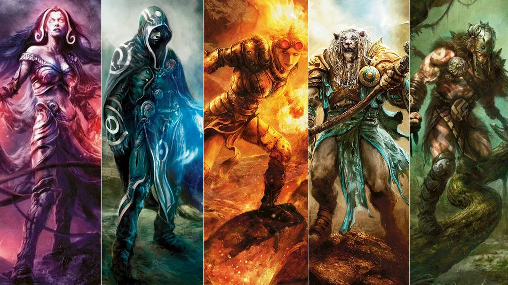

Custom Magic Ruleset to play a game with a single pack per player.
Rules
-
Build a deck from a single Booster Pack
Remove tokens and non-playable inserts, such as ads and art cards. All remaining cards are your deck, including any basic lands.
-
Add 10 Basic Lands
2 Basic Lands of each Color
-
Basic Lands tap for Any Color
Each player starts with this emblem:
Basic lands you control have “{T}: Add one mana of any color.”
-
Starting the game
- Start at 20 life
- Draw 5 Cards, no Mulligans
- Player going first skips first draw
Special Rule for Empty Library
If you would draw from an empty library, lose 5 life, shuffle your graveyard into your library, then draw.
Optional starting tokens
Agree on a token pool and count before playing. Use the randomizer to roll separately for each player, or agree to use the same result. Each player creates their tokens untapped at the beginning of their first upkeep.
All other normal two-player Magic rules apply.
Starting token randomizer
Select which tokens to include and how many to roll.
Results
No tokens rolled yet.
Create these tokens at the beginning of your first upkeep.
Roll again for the other player, or share a roll by agreement.Token reference
Select a card to enlarge it.
Map: Exploring requires a creature you control. Reveal the top card of your library. If it is a land, put it into your hand. Otherwise, put a +1/+1 counter on that creature, then return the card to the top of your library or put it into your graveyard.